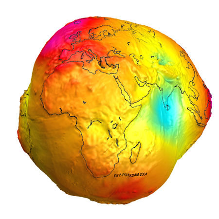
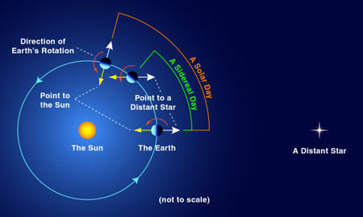
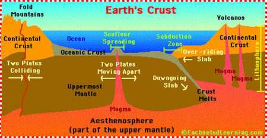
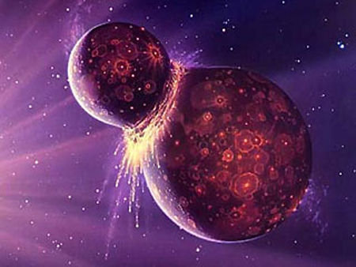
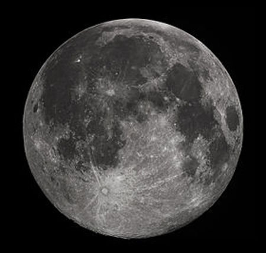
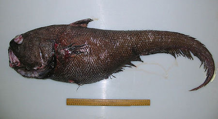
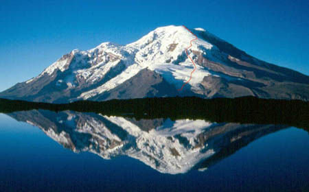

地球的九個有趣事實：
●（EARTH）背景音樂
※未經許可，請勿擅自複製轉載。
01.地球並不是圓的

我並不是“平地球學會”的一名成員。很明顯地球是個球體，但是由於地心引力的作用，它並不是一個完美的圓球。事實上，赤道周圍也因此向外隆起，形成一個“備用輪胎”結構。地球的極半徑是3949.99英里(6356.89公里)，而赤道半徑是3963.34英里(6378.38公里)。
02.“Earth”起源于盎格魯撒克遜語

我們太陽系裡的其他行星都是根據希臘或者羅馬傳說中的神命名的，只有我們的地球是個例外。“Earth”這個詞起源于盎格魯撒克遜語裡的“Erda”，意思是“地面”或者“土壤”，據悉它已經有1000年歷史。具有諷刺意味的是，這顆行星71%的表面被水覆蓋，是整個宇宙中我們已知的唯一一顆以液態形式存在水的行星。
03.地球一天並非24小時

人們經常稱，白天時間不夠用，他們這麼說確實沒錯，因為地球一天並非24小時，我們的這個綠色家園圍繞地軸旋轉一周的實際用時是23時56分零4秒。這被稱之為一個恒星日。太陽日是指太陽返回子午線的同一點所用的時間，每年這個時間有多達16分鐘的差異，這主要取決於太陽位於軌道上的哪個位置。
04.地球是擁有板塊構造的唯一一顆行星

科學家認為，地球由7個重要“地殼”板塊構成，它們每年向不同方向移動4英寸(10.16釐米)。從理論上來說，當板塊相互撞在一起時，就會形成山脈;它們彼此分離就會形成峽谷。另外，它們還能造成地震和火山。不過好消息是，所有這些地質運動都有助於碳迴圈和補給，讓我們已知的生命形式繼續下去。因為碳是我們存在的基本成分。
05.地球曾擁有一個名“忒伊亞”的姊妹行星

科學家現在認為，曾經我們在太陽周圍的軌道裡並不孤獨，因為我們曾擁有一顆名叫“忒伊亞”的姊妹行星，它同火星大小差不多，並以60度角從我們的藍色地球前面或者後方經過。大約45.33億年前的一個下午，“忒伊亞”突然撞上地球;它的大部分物質都被地球吸收，但是有一大塊被炸飛，並與地球物質結合，形成月球。為什麼我們會這麼認為呢?這是因為對我們這麼大的行星來說，月球異常的大，而且它還擁有與地球類似的金屬同位素。
06.神秘月球近乎完美的軌道

提及月球，可以確定的一點是：它並不是由乾酪構成的。除此以外，還有一些事情是我們不瞭解的。例如，月球的中心與地球之間的距離比正常情況下近6000英尺(1828.8米)，這種情況按說應該導致月球變得更不穩定，或者說漂移不定，然而它的軌道卻是一個近乎完美的圓形結構。月球上覆蓋著一層聞起來像黑火藥的奇怪塵埃，儘管這種材料與黑火藥完全不是一回事。雖然月球上並沒有“暗面”，但是地球的引力已經迫使月球放慢速度，旋轉一周需要長達24小時。這也是月球只有一面朝向我們的原因。另外非常巧合的是，太陽恰巧比月球大400倍，而且它與地球之間的距離比與月球的距離遠400倍，因此天空中的它們看起來一樣大。
07.人類未研究的海洋面積超過90%

儘管我們已經踏足月球，並已探索了火星，但是你猜怎麼著?事實上我們才剛剛研究我們的遼闊海洋。人類已經研究過的藍色海洋面積不足10%。海洋包括97%的水和99%的棲息地面積。雖然目前我們已經確定212906種海洋生物，但是可能還有2500萬種有待我們去研究。這種情況導致尼斯湖水怪的說法也不那麼令人質疑了。
08.最低溫度：零下89.22攝氏度
地球上最冷的地方是南極洲(零下100華氏度，約合零下73.33攝氏度)，1983年7月21日記錄下來的世界最冷的地點是俄羅斯位於南極內陸高原的【沃斯托站】(Vostok Station)，這裡的感測器顯示，它的最低溫度是零下128.6華氏度(零下89.22攝氏度)。1922年9月13日記錄的溫度最高點是利比亞的埃爾‧阿茲茲亞(El Azizia)地區，最高溫度達到136華氏度(57.78攝氏度)。
09.地球最高點並非珠穆朗瑪峰

珠穆朗瑪峰確實是地球上最著名的一座山峰，它比海平面高29035英尺(約合8849.87米)。然而，就像現在我們認為的那樣，地球並不是一個完美的圓球，位於赤道的任何人或者任何東西都距離恒星更近一些。也就是說，儘管位於厄瓜多爾境內的欽博臘索山只有20564英尺(6267.91米)高，但是由於它位於赤道周圍的隆起部分，因此從學術層面上來說，它距離地心比珠穆朗瑪峰遠1.5英里(2414.02米)。
TOPへ
首頁へ